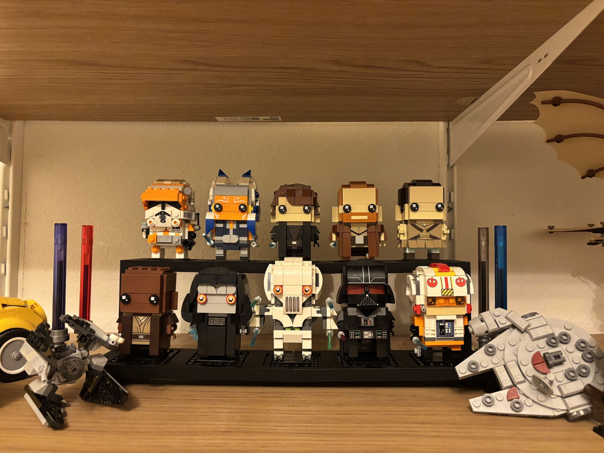

Design goal
I wanted a clean way to display a growing LEGO BrickHeadz collection on a shelf without placing every figure at the same height. I modeled a modular podium in SOLIDWORKS so the display could organize multiple figures while fitting the available shelf space.
Structural revision
The first wide version looked fine initially, but the center section began to sag under the span and the weight of the figures. Instead of keeping the same geometry, I revised the stand by adding an additional support through the center.
What it taught me
This was a useful reminder that even a lightweight display part has load paths. A wide printed beam can deform when the support layout is poor, and adding material where the structure actually needs it can be more effective than simply making the entire part thicker.